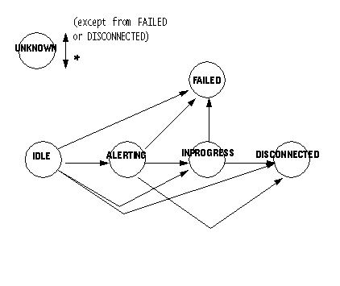

public interface ACDConnection extends Connection
ACDConnection models either a direct relationship between
a Call and an ACDAddress or an indirect relationship
between a Call and an ACDAddress through an
ACDManagerAddress.
The direct relationship occurs when a Call arrives at an
ACDAddress. The indirect relationship occurs when a
Call arrives at an ACDManagerAddress and the
implementation of the ACDMangerAddress determines that it must
involve an ACDAddress in the Call.
The ACDConnection to an ACDAddress in either case,
direct or indirect, models a Call that is being routed to an agent logged
into the ACDAddress, or a call that is being queued for agents
logged into the ACDAddress
The ACDConnection is not a connection in the same sense as a
Connection, because it never represents a call to an endpoint.
Its purpose is to model a call that is being routed or queued by an ACD
system.
getTerminalConnection() method on the core
Connection interface, which ACDConnection extends,
will always return null because ACDAddresses do
not have Terminals associated with them.
ACDConnection is available through the
ACDConnection.getState() method inherited from the core
Connection interface. Each state is an integer constant
defined in the core Connection interface. Their meaning
in this interface are summarized below:
ACDConnection.IDLE |
As in the core, this is the initial and transitory state for new
ACDConnection objects.
|
ACDConnection.INPROGRESS |
This state indicates that an ACDConnection is queued at a
particular ACDAddress. This will result when there are no
agents available to route the call to.
|
ACDConnection.ALERTING |
This state indicates that the ACDConnection has been made to a
particular ACDAddress. This state is only valid for
ACDConnections that are not associated with an
ACDManagerConnection.
|
ACDConnection.DISCONNECTED |
This state has the same definition as in the core. |
ACDConnection.FAILED |
This state has the same definition as in the core. |
ACDConnection.UNKNOWN |
This state has the same definition as in the core. |
ACDConnection class defines the allowable
ACDConnection state transitions. These finite-state transitions
must be guaranteed by the implementation. Each method that causes a change in
an ACDConnection state must be consistent with this state diagram.
Note there is a general left-to-right progression of the state transitions.
A Connection object may transition into and out of the
ACDConnection.UNKNOWN state at any time with the annotated
exceptions (hence, the asterisk qualifier next to its bidirectional transition
arrow).

ACDAddress,
ACDManagerAddress,
ACDManagerConnectionALERTING, CONNECTED, DISCONNECTED, FAILED, IDLE, INPROGRESS, UNKNOWN| Modifier and Type | Method and Description |
|---|---|
ACDManagerConnection |
getACDManagerConnection()
Returns the
ACDManagerConnection associated with this
ACDConnection. |
disconnect, getAddress, getCall, getCapabilities, getConnectionCapabilities, getState, getTerminalConnectionsACDManagerConnection getACDManagerConnection() throws MethodNotSupportedException
ACDManagerConnection associated with this
ACDConnection.
A null is returned if this ACDConnection is not in an
indirect relationship between a Call, an ACDAddress and an
ACDManagerAddress.
MethodNotSupportedException - This method is not supported by
the implementation.Copyright © 2009 Avaya All Rights Reserved.